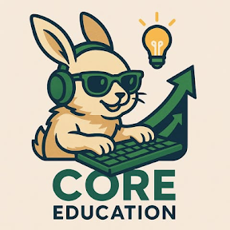

About
私は、自身で立ち上げたNPO法人での活動を通じて、「社会と教育をつなぐ」ことをテーマに、 一人ひとりが自分なりの幸福を実現できる社会を目指して活動しています。
子どもから大人まで、それぞれが成長や学びの意義に気づき、その力を誰かのために活かすことで、 自分なりの役割や可能性を見つけられるような教育の形を探究しています。
学校教育、地域活動、キャリア教育、IT・AI活用などを通じて、 学びと社会をつなぐ仕組みづくりに取り組んでいます。
Profile

名前：今井 健史 / Takeshi Imai
活動拠点：東京都
所属：NPO法人 CORE EDUCATION / Education Festa実行委員会 / ZEN大学生 / フリーランス
関心領域：
教育 / 人材育成 / キャリア / メンタルケア / 共生 / IT・AI活用
Education Festa
Education Festaは、学校授業で学んだ内容を、地域社会の中で体験的に学び直すことを目的としたプロジェクトです。
多文化共生、合理的配慮、キャリア教育などをテーマに、行政、学校、地域団体、企業、学生ボランティアと連携しながら、 学びと社会体験をつなぐ場づくりを行っています。
参加者一人ひとりが「自分にできること」や「社会とのつながり」を考えるきっかけとなることを目指しています。
事業報告書
NPO法人CORE EDUCATIONおよびEducation Festa実行委員会で実施してきた活動内容をまとめています。
学校授業、地域イベント、行政・学校・地域団体との連携、参加者の声などを記録し、 今後の活動改善や地域展開につなげるための資料として作成しています。
将来の展望
現在、「社会活動をキャリアにつなげる仕組み」の構築に取り組んでいます。
ZEN大学での学びも活かしながら、社会活動や学びの経験を可視化する「社会教育シート」や、 成長と習慣を記録・分析するツールの開発を進めています。
将来的には、一人ひとりの成長や社会参加が適切に評価され、学校・地域・企業が連携しながら、 人それぞれの可能性を広げられる社会づくりに貢献していきたいと考えています。